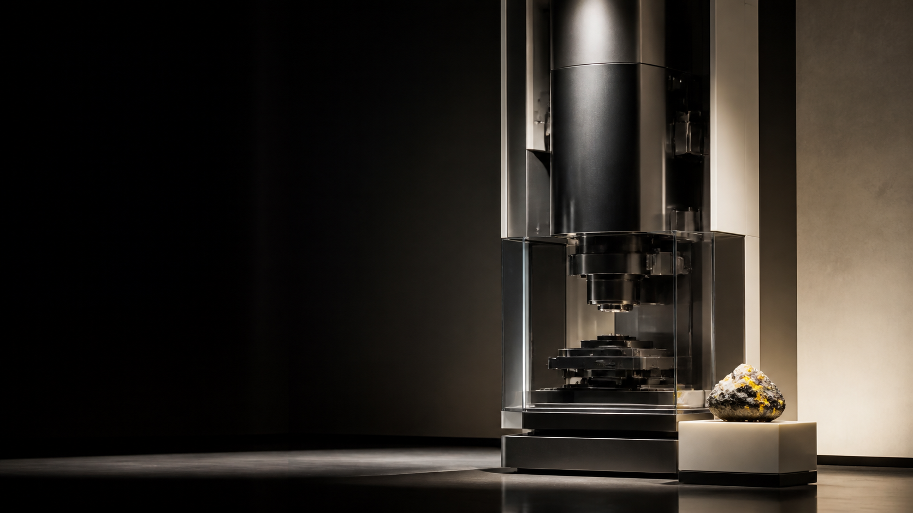

Targets
New biological mechanisms and intervention paths
AI-NATIVE DISCOVERY COMPANY
Beginning with longevity and drug discovery, we turn immense possibility spaces into a small number of candidates worth validating in the physical world.
New drugs. New materials. New processes.
AI changes more than the efficiency of work. It changes the scale of the space humanity can explore.

Starting with aging and drug discovery.
AI continuously searches for targets, molecules, and therapeutic paths worth validating.

AI can propose
ten thousand answers.
We produce real discovery assets that can be developed, licensed, and translated.
New biological mechanisms and intervention paths
Candidates selected through computation and experiments
Traceable and reproducible physical evidence
Outcomes ready for licensing, partnership, or further development
GWO connects compute, data processing, and physical experimental resources, making them callable by the machine discovery process.
NARQUE is not building a single drug. We are building a machine system capable of producing discoveries again and again.

DISCOVERY, MADE CONTINUOUS